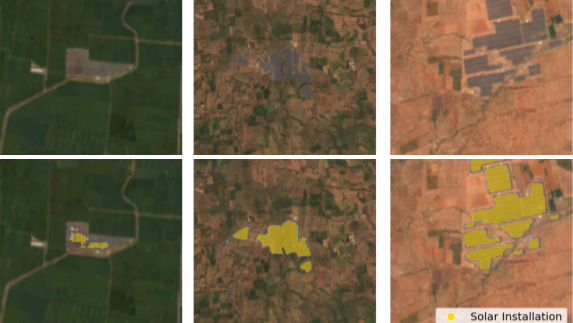
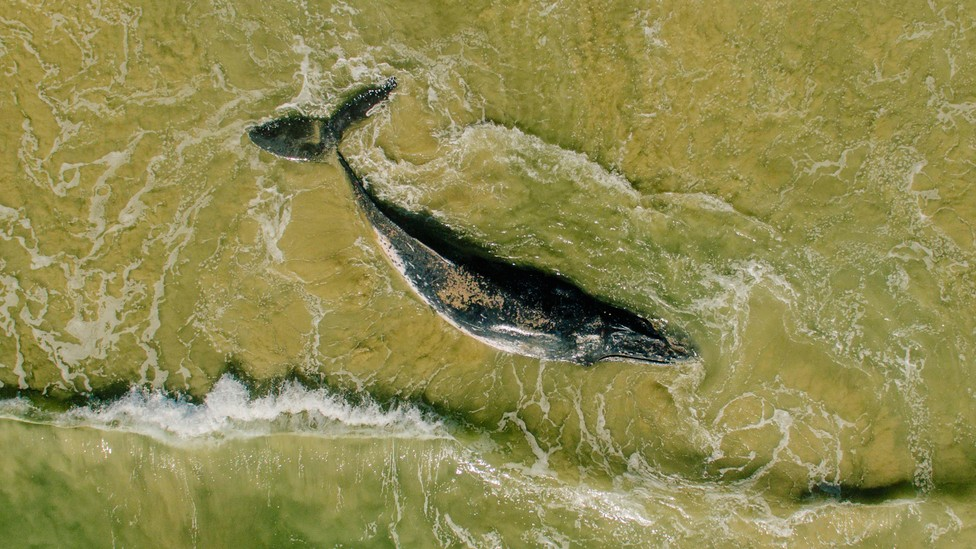

Earth Observation · 2022
An AI inventory of every utility-scale solar farm in India
National-scale dataset built from satellite imagery to inform renewable-energy policy and siting decisions.
Principal Research Scientist · Microsoft AI for Good Lab
I lead and conduct research at the intersection of machine learning, computer vision, and remote sensing, with a focus on applying AI to problems that matter for people and the planet — from geospatial machine learning and Earth observation to medical imaging and humanitarian response.
A few projects I'm proud of. See Research for more and Publications for the full list.

National-scale dataset built from satellite imagery to inform renewable-energy policy and siting decisions.

Open data and ML to monitor the Hindu Kush Himalaya glaciers — work funded by an $18K Microsoft AI Research Grant.

Very-high-resolution satellite imagery + deep learning for biodiversity and wildlife monitoring at scale.
Letting hospitals share usable synthetic medical data without exposing patients — featured in VentureBeat.
Tools that help human-rights groups make sense of vast troves of evidence — covered by the WSJ.

A drop-in normalization layer that improves generalization of dense-prediction networks across geographies.
Leading research programs in geospatial machine learning, medical imaging, and computer vision in support of Microsoft’s AI for Good initiatives, in collaboration with Juan Lavista Ferres.
Microsoft AI for Good Lab
Led projects in geospatial ML, medical imaging, and computer vision in support of Microsoft’s AI for Earth and AI for Health programs.
Microsoft AI for Good Lab
Tackling large-scale problems in medical imaging, geospatial ML, and computer vision in support of Microsoft’s AI for Earth and AI for Health initiatives.
Conditional image generation with GANs for synthetic satellite imagery.
Model generalization, human-machine collaboration, transfer learning, and land-cover mapping with Nebojsa Jojic and Dan Morris.
Mila · University of Montréal
Generalization, variational inference, and remote sensing for social good with Yoshua Bengio.
Intelligent Agents and Strategic Reasoning Lab, UTEP
Conditional computation, adversarial ML, generative modeling and geospatial analytics with Christopher Kiekintveld.
University of Texas at El Paso (UTEP) · 2015–2020
Pontificia Universidad Católica Madre y Maestra (PUCMM) · 2010–2014
A curated list grouped by year. Citation counts are snapshots from Google Scholar; see Scholar for the complete record.
ACM Transactions on Spatial Algorithms and Systems
JAMA Network Open
arXiv preprint
WACV 2025
arXiv preprint
WACV 2025
arXiv preprint
Frontiers in Environmental Science
arXiv preprint
arXiv preprint
Computers in Biology and Medicine
Journal of Marine Science and Engineering
ICCV Workshops 2023
Land
ACM COMPASS 2023
arXiv preprint
Microsoft Technical Report MSR-TR-2023-7
Scientific Data (Nature)
Scientific Reports (Nature)
CVPR Workshops 2022
ICDM Workshops 2022
Computer Methods and Programs in Biomedicine
PLOS ONE
IEEE JSTARS
Cyber Deception (Springer)
CISTI 2022
GoodIT ’21 · VentureBeat feature
AAAI/ACM AIES 2021
medRxiv
ACM COMPASS 2021
arXiv preprint · The Atlantic feature
WorldCIST 2021
IEEE IGARSS 2021
European Journal of Nuclear Medicine and Molecular Imaging
CVPR 2020
AAAI 2020
NeurIPS 2020 Climate Change AI Workshop
Electronics
ECCV 2020
GameSec 2020
ICDTI 2020
Ph.D. Dissertation, The University of Texas at El Paso
AGU Fall Meeting 2020
MILCOM 2018
CVPR Workshops 2018
arXiv preprint
Machine Learning Methods in Visualisation for Big Data
IEEE IGARSS 2017
IFAC-PapersOnLine (ACE 2019)
IEEE WHISPERS 2018
SPIE Defense + Security 2018
arXiv preprint
anthony.ortiz [at] microsoft [dot] com
Microsoft AI for Good Lab
Redmond, WA, USA